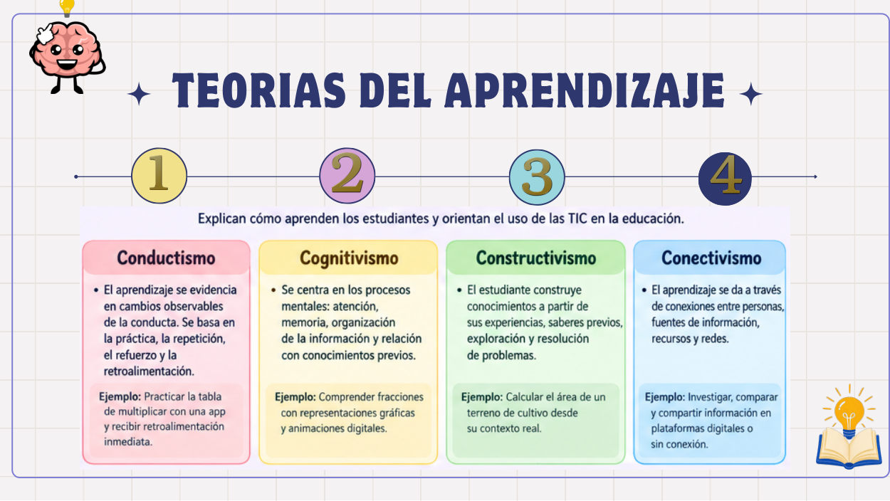
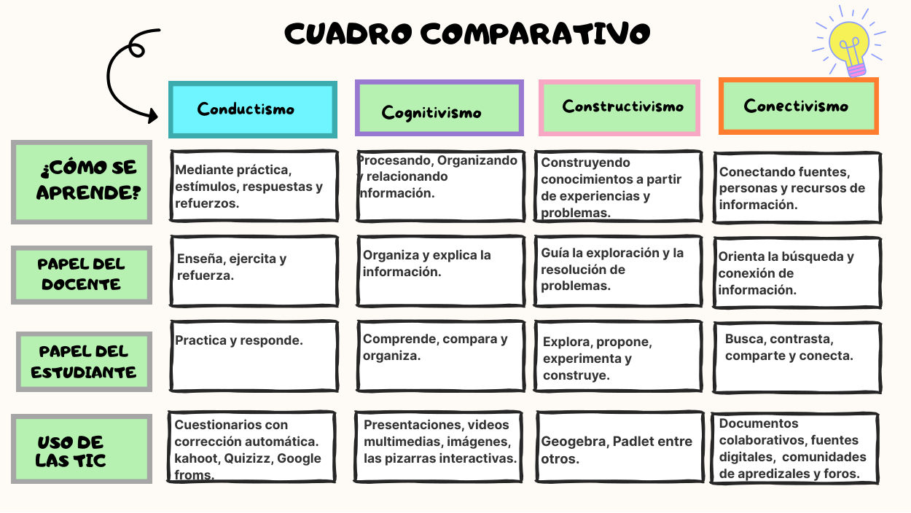
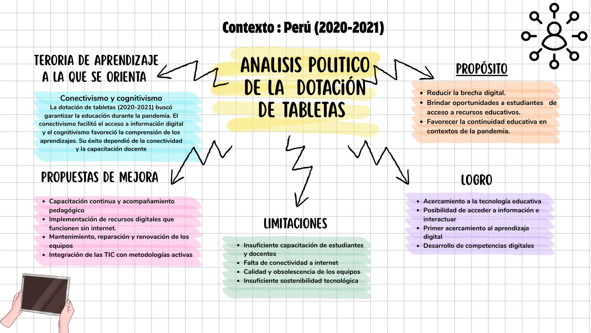

El organizador explica cómo cada teoría orienta las actividades del docente y del estudiante, y relaciona esos enfoques con herramientas TIC.

Cuadro comparativo
| Teoría | Cómo se aprende | Rol docente / estudiante | Uso de TIC recogido en la actividad |
|---|---|---|---|
| Conductismo | Práctica, estímulos, respuestas y refuerzos. | El docente ejercita y refuerza; el estudiante practica y responde. | Cuestionarios con corrección automática, Kahoot, Quizizz y Google Forms. |
| Cognitivismo | Procesar, organizar y relacionar información. | El docente organiza y explica; el estudiante comprende y compara. | Presentaciones, videos, imágenes y pizarras interactivas. |
| Constructivismo | Construir conocimientos a partir de experiencias y problemas. | El docente guía la exploración; el estudiante propone y experimenta. | GeoGebra y Padlet. |
| Conectivismo | Conectar fuentes, personas y recursos. | El docente orienta la búsqueda; el estudiante contrasta y comparte. | Documentos colaborativos, fuentes digitales y foros. |


Análisis de la dotación de tabletas (Perú, 2020-2021)
El material asocia la dotación de tabletas con el conectivismo y el cognitivismo. Presenta como propósitos la continuidad educativa, el acceso a recursos y la reducción de la brecha digital; registra limitaciones de conectividad, capacitación, mantenimiento y obsolescencia, junto con propuestas de mejora como acompañamiento pedagógico y recursos sin conexión.
Competencias docentes y currículo
La bibliografía del organizador incluye el Marco de competencias de los docentes en materia de TIC (UNESCO, 2019) y el Currículo Nacional de la Educación Básica (Ministerio de Educación del Perú, 2016). El archivo no desarrolla una lista detallada de competencias de UNESCO; se preserva esa delimitación documental.